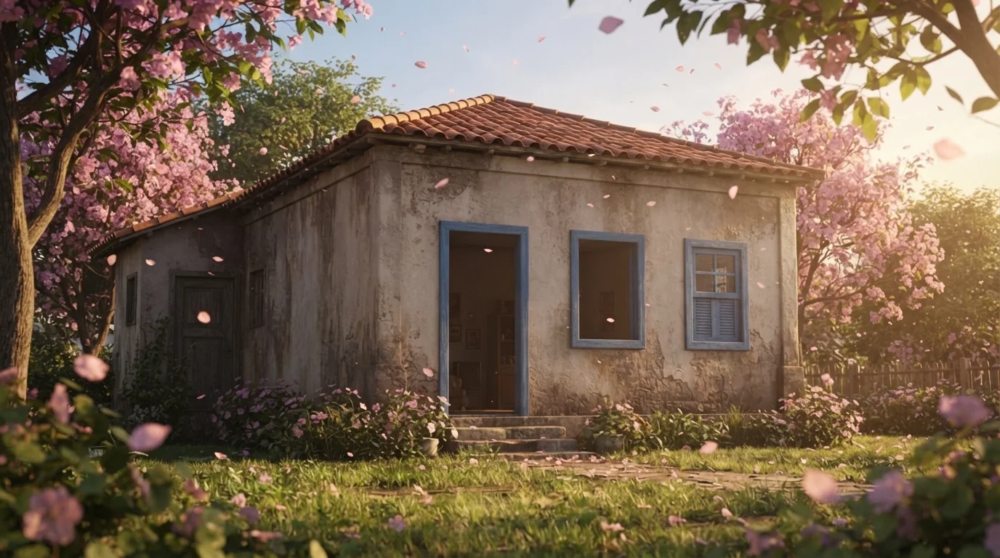

🐾 PATINHAS PLAY · MEU CANTINHO FELINO
← Voltar ao jogo

A Casa dos Recomeços · Filme de abertura
▶ Assistir abertura
As três cenas são reproduzidas em sequência, sem opção de pular ou avançar manualmente.